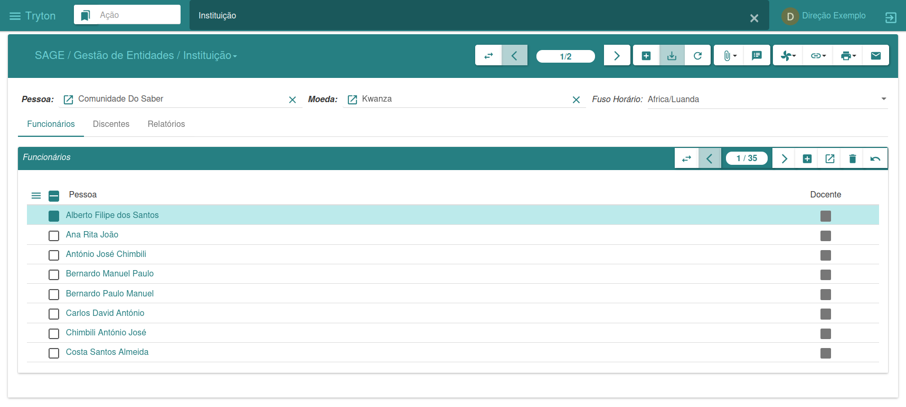
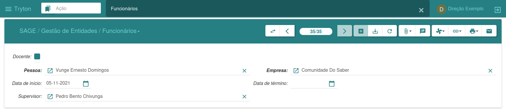
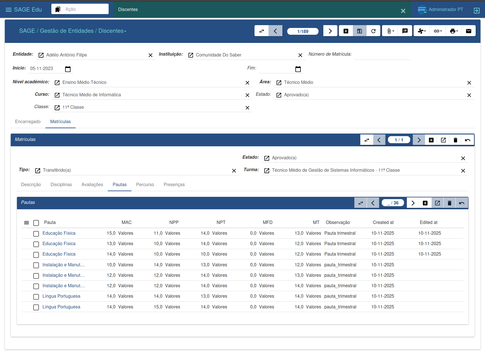

Entity Management
The main function of the Entity Management menu is to manage entities within the system. Each entity can represent individuals or legal entities, organizations, associations, businesses, and any type of group that can be treated as an entity in the system.
Each entity can have associated:
- Contacts
- Addresses
- Categories
- Identifiers
- Type (Individual or Corporate)
Entities
To create a new entity:
-
Click on “New”
-
Fill in the required fields
-
Click on “Save”, and the new entity is created.
After creating the entity, you can add contacts, addresses, language, and other supplementary information.

Institution
To create a new institution:
-
Ensure that an entity has already been created.
-
Click on “New”.
-
Search for the entity to be associated.
-
Fill in the remaining data.
-
Click on “Save”, and the new institution is created.

Employees
The system offers two ways to register employees:
-
By Institution
- Menu: Institution → Employees
-
By General sub-menu
- Menu: Employees
To register:
-
Click on “New”
-
Fill in the required fields
-
If the institution is not selected, search for the desired one
-
Click on “Save”

Students
To register a student:
-
Ensure an entity has already been created.
-
Click "New".
-
Search for the entity.
-
Fill in the additional fields.
-
Click "Save".
-
Confirm the registration.

You can view:
-
Subjects
-
Assessments
-
Grades
-
Academic record